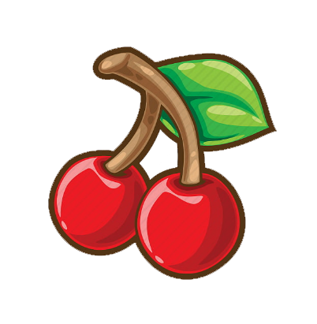

Apple.
An apple is an edible fruit produced by an apple tree (Malus domestica).
Apple trees are cultivated worldwide and are the most widely grown species in
the genus Malus. The tree originated in Central Asia, where its wild ancestor,
Malus sieversii, is still found today. Apples have been grown for thousands of years
in Asia and Europe and were brought to North America by European colonists.
Apples have religious and mythological significance in many cultures,
including Norse, Greek and European Christian tradition.
Apple trees are large if grown from seed.
Generally, apple cultivars are propagated by grafting onto rootstocks, which control the size of the resulting tree. There are more than 7,500 known cultivars of apples, resulting in a range of desired characteristics. Different cultivars are bred for various tastes and use, including cooking, eating raw and cider production. Trees and fruit are prone to a number of fungal, bacterial and pest problems, which can be controlled by a number of organic and non-organic means. In 2010, the fruit's genome was sequenced as part of research on disease control and selective breeding in apple production.
The apple is a deciduous tree, generally standing 2 to 4.5 m (6 to 15 ft) tall in cultivation and up to 9 m (30 ft) in the wild. When cultivated, the size, shape and branch density are determined by rootstock selection and trimming method. The leaves are alternately arranged dark green-colored simple ovals with serrated margins and slightly downy undersides.[5]
Apple blossom
Blossoms are produced in spring simultaneously with the budding of the leaves and are produced on spurs and some long shoots. The 3 to 4 cm (1 to 1 1⁄2 in) flowers are white with a pink tinge that gradually fades, five petaled, with an inflorescence consisting of a cyme with 4–6 flowers. The central flower of the inflorescence is called the "king bloom"; it opens first and can develop a larger fruit.[5][6]
The fruit matures in late summer or autumn, and cultivars exist in a wide range of sizes. Commercial growers aim to produce an apple that is 7 to 8.5 cm (2 3⁄4 to 3 1⁄4 in) in diameter, due to market preference. Some consumers, especially those in Japan, prefer a larger apple, while apples below 5.5 cm (2 1⁄4 in) are generally used for making juice and have little fresh market value. The skin of ripe apples is generally red, yellow, green, pink, or russetted, though many bi- or tri-colored cultivars may be found.[7] The skin may also be wholly or partly russeted i.e. rough and brown. The skin is covered in a protective layer of epicuticular wax.[8] The exocarp (flesh) is generally pale yellowish-white,[7] though pink or yellow exocarps also occur.
Banana.
A banana is an elongated, edible fruit – botanically a berry] – produced by several kinds of large herbaceous flowering plants in the genus Musa.[3] In some countries, bananas used for cooking may be called "plantains", distinguishing them from dessert bananas. The fruit is variable in size, color, and firmness, but is usually elongated and curved, with soft flesh rich in starch covered with a rind, which may be green, yellow, red, purple, or brown when ripe. The fruits grow in clusters hanging from the top of the plant. Almost all modern edible seedless (parthenocarp) bananas come from two wild species – Musa acuminata and Musa balbisiana. The scientific names of most cultivated bananas are Musa acuminata, Musa balbisiana, and Musa × paradisiaca for the hybrid Musa acuminata × M. balbisiana, depending on their genomic constitution. The old scientific name for this hybrid, Musa sapientum, is no longer used.
Musa species are native to tropical Indomalaya and Australia, and are likely to have been first domesticated in Papua New Guinea.[4][5] They are grown in 135 countries,[6] primarily for their fruit, and to a lesser extent to make fiber, banana wine, and banana beer and as ornamental plants. The world's largest producers of bananas in 2017 were India and China, which together accounted for approximately 38% of total production.[7]
Worldwide, there is no sharp distinction between "bananas" and "plantains". Especially in the Americas and Europe, "banana" usually refers to soft, sweet, dessert bananas, particularly those of the Cavendish group, which are the main exports from banana-growing countries. By contrast, Musa cultivars with firmer, starchier fruit are called "plantains". In other regions, such as Southeast Asia, many more kinds of banana are grown and eaten, so the binary distinction is not useful and is not made in local languages.
The term "banana" is also used as the common name for the plants that produce the fruit.[3] This can extend to other members of the genus Musa, such as the scarlet banana (Musa coccinea), the pink banana (Musa velutina), and the Fe'i bananas. It can also refer to members of the genus Ensete, such as the snow banana (Ensete glaucum) and the economically important false banana (Ensete ventricosum). Both genera are in the banana family, Musaceae.
The earliest domestication of bananas (Musa spp.) were initially from naturally occurring parthenocarpic (seedless) individuals of Musa acuminata banksii in New Guinea. These were cultivated by Papuans before the arrival of Austronesian-speakers. Numerous phytoliths of bananas have been recovered from the Kuk Swamp archaeological site and dated to around 10,000 to 6,500 BP. From New Guinea, cultivated bananas spread westward into Island Southeast Asia through proximity (not migrations). They hybridized with other (possibly independently domesticated) subspecies of Musa acuminata as well as Musa balbisiana in the Philippines, northern New Guinea, and possibly Halmahera.
Cherry
Many cherries are allied to the subgenus Prunus subg. Cerasus, which is distinguished by having the flowers in small corymbs of several together (not singly, nor in racemes), and by having smooth fruit with only a weak groove along one side, or no groove. The subgenus is native to the temperate regions of the Northern Hemisphere, with two species in America, three in Europe, and the remainder in Asia. Other cherry fruits are borne on racemes and called bird cherries. The cultivated forms are of the species sweet cherry (P. avium) to which most cherry cultivars belong, and the sour cherry (P. cerasus), which is used mainly for cooking. Both species originate in Europe and western Asia; they usually do not cross-pollinate. Some other species, although having edible fruit, are not grown extensively for consumption, except in northern regions where the two main species will not grow. Irrigation, spraying, labor, and their propensity to damage from rain and hail make cherries relatively expensive. Nonetheless, demand is high for the fruit. In commercial production, sour cherries, as well as sweet cherries sometimes, are harvested by using a mechanized "shaker".[8] Hand picking is also widely used for sweet as well as sour cherries to harvest the fruit to avoid damage to both fruit and trees. Common rootstocks include Mazzard, Mahaleb, Colt, and Gisela Series, a dwarfing rootstock that produces trees significantly smaller than others, only 8 to 10 feet (2.5 to 3 meters) tall.[9] Sour cherries require no pollenizer, while few sweet varieties are self-fertile.[9] A cherry tree will take three to four years once it is planted in the orchard to produce its first crop of fruit, and seven years to attain full maturity.[10] Like most temperate-latitude trees, cherry trees require a certain number of chilling hours each year to break dormancy and bloom and produce fruit. The number of chilling hours required depends on the variety. Because of this cold-weather requirement, no members of the genus Prunus can grow in tropical climates. (See "production" section for more information on chilling requirements) Cherries have a short growing season and can grow in most temperate latitudes.[10] Cherries blossom in April (in the Northern Hemisphere) and the peak season for the cherry harvest is in the summer. In southern Europe in June, in North America in June, in England in mid-July, and in southern British Columbia (Canada) in June to mid-August. In many parts of North America, they are among the first tree fruits to flower and ripen in mid-Spring. In the Southern Hemisphere, cherries are usually at their peak in late December and are widely associated with Christmas. 'Burlat' is an early variety which ripens during the beginning of December, 'Lapins' ripens near the end of December, and 'Sweetheart' finish slightly later.
Durian.
The durian (/ˈdjʊəriən, ˈdʊr-, -æn/) is the fruit of several tree species belonging to the genus Durio. There are 30 recognised Durio species, at least nine of which produce edible fruit, with over 300 named varieties in Thailand and 100 in Malaysia, as of 1987.[3][4] Durio zibethinus is the only species available in the international market: other species are sold in their local regions. It is native to Borneo and Sumatra.
Named in some regions as the "king of fruits",the durian is distinctive for its large size, strong odour, and thorn-covered rind. The fruit can grow as large as 30 centimetres (12 inches) long and 15 cm (6 in) in diameter, and it typically weighs 1 to 3 kilograms (2 to 7 pounds). Its shape ranges from oblong to round, the colour of its husk green to brown, and its flesh pale yellow to red, depending on the species.
Some people regard the durian as having a pleasantly sweet fragrance, whereas others find the aroma overpowering with an unpleasant odour. The smell evokes reactions from deep appreciation to intense disgust, and has been described variously as rotten onions, turpentine, and raw sewage. The persistence of its odour, which may linger for several days, has led to the fruit's banishment from certain hotels and public transportation in Southeast Asia. By contrast, the nineteenth-century British naturalist Alfred Russel Wallace described its flesh as "a rich custard highly flavoured with almonds". The flesh can be consumed at various stages of ripeness, and it is used to flavour a wide variety of savoury and sweet desserts in Southeast Asian cuisines. The seeds can also be eaten when cooked.
Over the centuries, numerous durian cultivars, propagated by vegetative clones, have arisen in Southeast Asia. They used to be grown with mixed results from seeds of trees bearing superior quality fruit, but now are propagated by layering, marcotting, or more commonly, by grafting, including bud, veneer, wedge, whip or U-grafting onto seedlings of randomly selected rootstocks. Different cultivars may be distinguished to some extent by variations in the fruit shape, such as the shape of the spines.[10] Durian consumers express preferences for specific cultivars, which fetch higher prices in the market.[
Elderberry.
The oppositely arranged leaves are pinnate with 5–9 leaflets (or, rarely, 3 or 11). Each leaf is 5–30 cm (2.0–11.8 in) long, and the leaflets have serrated margins. They bear large clusters of small white or cream-colored flowers in late spring; these are followed by clusters of small black, blue-black, or red berries (rarely yellow or white). Color
Elderberries are rich in anthocyanidins[3] that combine to give elderberry juice an intense blue-purple coloration that turns reddish on dilution with water.[4] These pigments are used as colorants in various products,[3] and "elderberry juice color" is listed by the USFDA as allowable in certified organic food products.[3] In Japan, elderberry juice is listed as an approved "natural color additive" under the Food and Sanitation Law.[5] Fibers can be dyed with elderberry juice (using alum as a mordant)[6] to give a light "elderberry" color.
Although the cooked berries (pulp and skin) of most species of Sambucus are edible,[7][8] the uncooked berries and other parts of plants from this genus are poisonous.[9] Leaves, twigs, branches, seeds, roots, flowers, and berries of Sambucus plants produce cyanogenic glycosides, which have toxic properties.[9] Ingesting a sufficient quantity of cyanogenic glycosides from berry juice, flower tea, or beverages made from fresh leaves, branches, and fruit has been shown to cause illness, including nausea, vomiting, abdominal cramps, diarrhea, and weakness.[7][9][10] In August 1983, a group of 25 people in Monterey County, California, became suddenly ill by ingesting elderberry juice pressed from fresh, uncooked Sambucus mexicana berries, leaves, and stems.[10] The density of cyanogenic glycosides is higher in tea made from flowers (or leaves) than from the berries.
Elder commonly grows near farms and homesteads. It is a nitrogen-dependent plant and thus is generally found near places of organic waste disposal. Elders are often grown as a hedgerow plant in Britain since they take very fast, can be bent into shape easily and grow quite profusely, thus having gained the reputation of being 'an instant hedge'. It is not generally affected by soil type or pH level and will virtually grow anywhere sufficient sunlight is available.
-
The Effect of FRUITS
▶Vegetables and fruits are an important part of a healthy diet, and variety is as important as quantity.
▶No single fruit or vegetable provides all of the nutrients you need to be healthy. Eat plenty every dayA diet rich in vegetables and fruits can lower blood pressure, reduce the risk of heart disease and stroke, prevent some types of cancer, lower risk of eye and digestive problems, and have a positive effect upon blood sugar, which can help keep appetite in check. Eating non-starchy vegetables and fruits like apples, pears, and green leafy vegetables may even promote weight loss. [1] Their low glycemic loads prevent blood sugar spikes that can increase hunger.
At least nine different families of fruits and vegetables exist, each with potentially hundreds of different plant compounds that are beneficial to health. Eat a variety of types and colors of produce in order to give your body the mix of nutrients it needs. This not only ensures a greater diversity of beneficial plant chemicals but also creates eye-appealing meals. -
Tips to eat more vegetables and fruits each day
1. Keep fruit where you can see it. Place several ready-to-eat washed whole fruits in a bowl or store chopped colorful fruits in a glass bowl in the refrigerator to tempt a sweet tooth.
2. Explore the produce aisle and choose something new. Variety and color are key to a healthy diet. On most days, try to get at least one serving from each of the following categories: dark green leafy vegetables; yellow or orange fruits and vegetables; red fruits and vegetables; legumes (beans) and peas; and citrus fruits.
3. Skip the potatoes. Choose other vegetables that are packed with different nutrients and more slowly digested carbohydrates.
4. Make it a meal. Try cooking new recipes that include more vegetables. Salads, soups, and stir-fries are just a few ideas for increasing the number of tasty vegetables in your meals.
-
Cardiovascular Disease
There is compelling evidence that a diet rich in fruits and vegetables can lower the risk of heart disease and stroke
＊A meta-analysis of cohort studies following 469,551 participants found that a higher intake of fruits and vegetables is associated with a reduced risk of death from cardiovascular disease, with an average reduction in risk of 4% for each additional serving per day of fruit and vegetables.
＊The largest and longest study to date, done as part of the Harvard-based Nurses’ Health Study and Health Professionals Follow-up Study, included almost 110,000 men and women whose health and dietary habits were followed for 14 years.
＊The higher the average daily intake of fruits and vegetables, the lower the chances of developing cardiovascular disease. Compared with those in the lowest category of fruit and vegetable intake (less than 1.5 servings a day), those who averaged 8 or more servings a day were 30% less likely to have had a heart attack or stroke.
＊Although all fruits and vegetables likely contributed to this benefit, green leafy vegetables, such as lettuce, spinach, Swiss chard, and mustard greens, were most strongly associated with decreased risk of cardiovascular disease. Cruciferous vegetables such as broccoli, cauliflower, cabbage, Brussels sprouts, bok choy, and kale; and citrus fruits such as oranges, lemons, limes, and grapefruit (and their juices) also made important contributions.
＊When researchers combined findings from the Harvard studies with several other long-term studies in the U.S. and Europe, and looked at coronary heart disease and stroke separately, they found a similar protective effect: Individuals who ate more than 5 servings of fruits and vegetables per day had roughly a 20% lower risk of coronary heart disease [4] and stroke, [5] compared with individuals who ate less than 3 servings per day.
-
Blood Pressure
＊The Dietary Approaches to Stop Hypertension (DASH) study[6] examined the effect on blood pressure of a diet that was rich in fruits, vegetables, and low-fat dairy products and that restricted the amount of saturated and total fat. The researchers found that people with high blood pressure who followed this diet reduced their systolic blood pressure (the upper number of a blood pressure reading) by about 11 mm Hg and their diastolic blood pressure (the lower number) by almost 6 mm Hg—as much as medications can achieve.
＊A randomized trial known as the Optimal Macronutrient Intake Trial for Heart Health (OmniHeart) showed that this fruit and vegetable-rich diet lowered blood pressure even more when some of the carbohydrate was replaced with healthy unsaturated fat or protein.
＊In 2014 a meta-analysis of clinical trials and observational studies found that consumption of a vegetarian diet was associated with lower blood pressure.
-
Cancer
Numerous early studies revealed what appeared to be a strong link between eating fruits and vegetables and protection against cancer. Unlike case-control studies, cohort studies, which follow large groups of initially healthy individuals for years, generally provide more reliable information than case-control studies because they don’t rely on information from the past. And, in general, data from cohort studies have not consistently shown that a diet rich in fruits and vegetables prevents cancer.